Chapter 9: Carnatic Wars
Adyar 1746, Ambur 1749 and Wandiwash 1760 complete the battle chronology; Dupleix 42-54's 1751 idea at Hyderabad is what Clive 57-67 copies with Awadh; the Seven Years' War explains Chandarnagar.
| Year | Paper | Topic | Answer |
|---|---|---|---|
| 2004 | Prelims | Prelims 2004 | (B) Only 3 |
| 2005 | Prelims | Prelims 2005 | (B) Battle of Ambur, Battle of Plassey, Battle of Wandiwash, Battle of Buxar |
Plassey gave conquest and the Drain; Buxar and the Treaty of Allahabad turned that plunder into a legal right.
Read it like a film first. Then go to the notes: every fact below is expanded there.
Story spine: Abuse, then conquest, then plunder, then legalise: each step makes the last step's abuse legal. Farman rights are abused through Dastaks (abuse); Plassey wins Bengal by conspiracy (conquest); the Bengal treasury is looted (plunder); Buxar and the Treaty of Allahabad 1765 make the loot a legal right (legalise).
| Character | Role in the story | Hook |
|---|---|---|
| Dr William Hamilton | EIC surgeon who cured Farrukhsiyar 13-19 and won the 1717 Farman | The Doctor |
| MQK 17-27 | Nawab of Bengal: allowed trade, refused the Mint | The Gatekeeper |
| Alivardi Khan 40-56 | Pragmatic Nawab who tolerated the EIC | The Pragmatist |
| Siraj 56-57 | His grandson: stopped Dastak misuse, took Calcutta | The Young Nawab |
| Robert Clive 57-67 | Recaptured Calcutta, won Plassey, drew the 1765 toolkit | The Strategist |
| Mir Jafar 57-60 | Bakshi who kept the army out of Plassey | Bag + Binoculars |
| Mir Qasim 60-63 | His son-in-law who would not stay a puppet | The Rebel |
| Shuja 54-75 and Shah Alam II 60-06 | Awadh's ruler and the Emperor who joined Qasim | The Allies |
| Hector Munroe | EIC commander who won Buxar 1764 | The Winner |
| Md Reza Khan | Naib Nazim and the EIC's Diwan in the Dual Government | The Go-between |
| W. Hastings 73-85 | Carried Direct Rule; Ring Fence is credited to him | The Administrator |
| Key term | In plain words |
|---|---|
| Farman | A royal or high order granting trading rights |
| Dastak | A pass issued by EIC officials certifying goods as the EIC's, so exempt from export duty |
| Gomasta | An Indian agent of the EIC who bought directly from peasants and artisans |
| Interloper | A non-EIC British merchant trading with India, breaking the Royal Charter |
| Free merchant | A man who sold to the EIC inside India, so no Charter was broken |
| Drain of Wealth | Gold and revenue flowing out of India instead of in |
| Diwani / Nizamat | Revenue and civil justice (EIC) / law and order and criminal justice (Nawab) |
| Dual Government | 1765-72: Diwani with the EIC, Nizamat with the Nawab |
| Indirect Rule | A puppet ruler plus a British Resident who controls him |
| Ring Fence | A buffer of allied States around the EIC's core |
Remember it as Plassey = conquest and plunder without rule; Buxar plus the Treaty of Allahabad = the legal right to rule.
| Year and paper | What was asked | The answer or trap | Where in this chapter |
|---|---|---|---|
| Prelims 2004 | Three statements: (1) in the Third Battle of Panipat, Ahmed Shah Abdali defeated Ibrahim Lodi; (2) Tipu 82-99 Sultan was killed in the Third Anglo-Mysore War; (3) Mir Jafar 57-60 entered into a conspiracy with the English for the defeat of Nawab Siraj-ud-Daula 56-57 in the Battle of Plassey. Which is/are correct? Options: (a) 1, 2 and 3 (b) Only 3 (c) 2 and 3 (d) None of these | (b) Only 3. Statement 1 is false: in the Third Battle of Panipat (1761) Abdali defeated the Marathas; Ibrahim Lodi lost the First Panipat (1526) to Babur 26-30. Statement 2 is false: Tipu 82-99 Sultan was killed in the Fourth Anglo-Mysore War (1798-99) at Srirangapatna, not the Third (1789-92). The teacher's ink: [1st BoP 1526] F, [4th 1799] F, T, and (b) circled. Only statement 3 is from this chapter, but the answer can still be reached from it | Section 5 (the conspiracy and the battle) |
| Prelims 2005 | The correct chronological order of the battles fought in India in the 18th century: (a) Wandiwash, Buxar, Ambur, Plassey (b) Ambur, Plassey, Wandiwash, Buxar (c) Wandiwash, Plassey, Ambur, Buxar (d) Ambur, Buxar, Wandiwash, Plassey | (b): Ambur (1749), Plassey (1757), Wandiwash (1760), Buxar (1764). The teacher wrote the years over option (a) (1760, 1764, 1749, 1757) and ticked (b). (a) puts Wandiwash and Buxar before Ambur; (c) puts Wandiwash before Plassey; (d) puts Buxar before Wandiwash. Ambur and Wandiwash are Carnatic Wars battles (Chapter 9) | Section 9 (chronology box) |
| Mains (the year is not written on the slide) | Why were there recurrent famines in British-ruled India? | The teacher: one paragraph of that answer comes from this topic: the Great Bengal Famine 1770 under the Dual Government (high revenue demand, harsh collection, hoarding unchecked, nobody responsible for relief) and his "Famine = Nature factor AND Human factor" board | Section 8.2.2 (Indirect Rule, the 1770 famine and Direct Rule) |
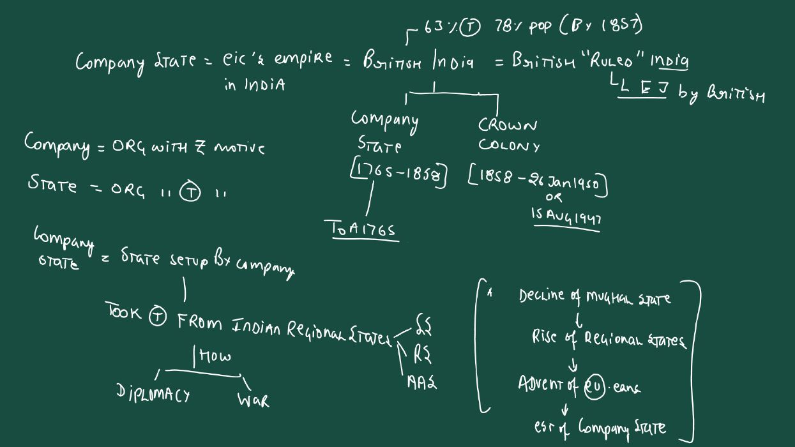
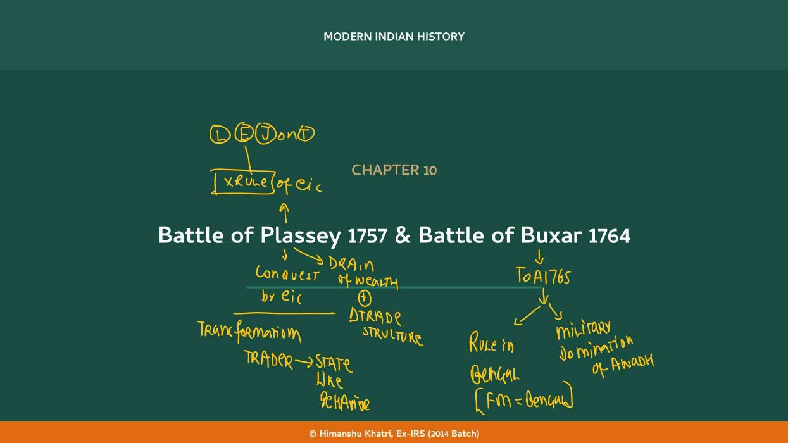
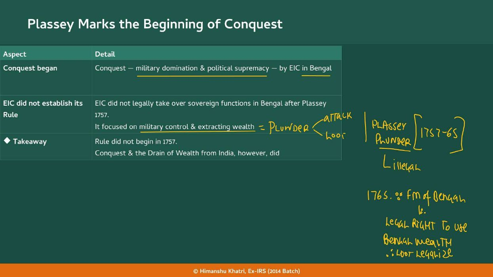
| Farman | Issued by | What it gave the EIC |
|---|---|---|
| 1613 | Jahangir 05-27 | The right to establish a factory in Surat, after the EIC defeated the Portuguese in the Battle of Suvali 1612 |
| 1618 | Jahangir 05-27 | The right to establish factories in the whole of the Mughal empire and liberal trading rights, due to lobbying by Thomas Roe (British Resident 1615-19) |
| 1691 | The Subahdar of Bengal, with Aurangzeb 58-07's approval | The right to Duty-Free Trade (DFT) in Bengal in exchange for Rs 3,000 per annum. The EIC's trade was economically beneficial and brought forex into India |
| 1717 Imperial (Royal) Farman | Farrukhsiyar 13-19 | Often called the "Magna Carta of the Company". It was the result of medical diplomacy: Dr William Hamilton, an English surgeon with the EIC, successfully treated Farrukhsiyar 13-19 for a serious illness |
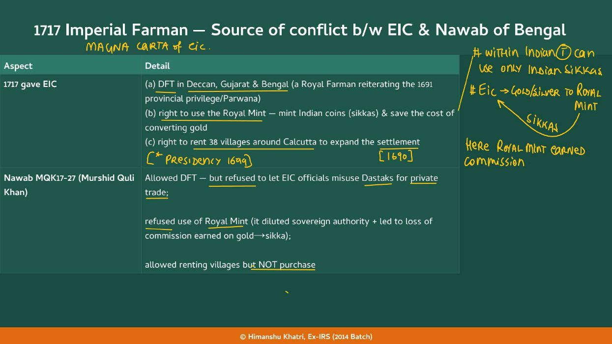
| Right in the 1717 Farman | What MQK 17-27 did | Why |
|---|---|---|
| Duty-free trade | Allowed duty-free trade by the EIC, but refused to let EIC officials misuse Dastaks for their own private trade | The privilege was for the Company's goods, not for the officials' personal goods |
| Use of the Royal Mint | Refused | It hurt sovereign authority and government revenue (the government earned commission on the conversion of gold into Indian sikkas) |
| 38 villages around Calcutta | Allowed renting but NOT purchase | The teacher underlined "NOT purchase" |
| Aspect | Detail |
|---|---|
| What a Dastak is | A permit issued by EIC officials certifying that goods belonged to the EIC, and hence exempt from export duty |
| Misuse | In practice EIC officials also used these permits for their own private trade, claiming goods bought in a personal capacity as company goods. They also sold Dastaks to other exporters |
| Scale (by 1750) | Private trade by EIC officials was worth 1,00,000 pounds per annum, roughly fifty times their annual salaries |
| Why the EIC could not control it | Even its own top officials in India engaged in private trade |
| Effect | Tax (duty) evasion and loss of revenue for the Bengal Suba |
| Who curbed it later | Cornwallis 86-93 curbed private trade: an honest Governor General of that era |
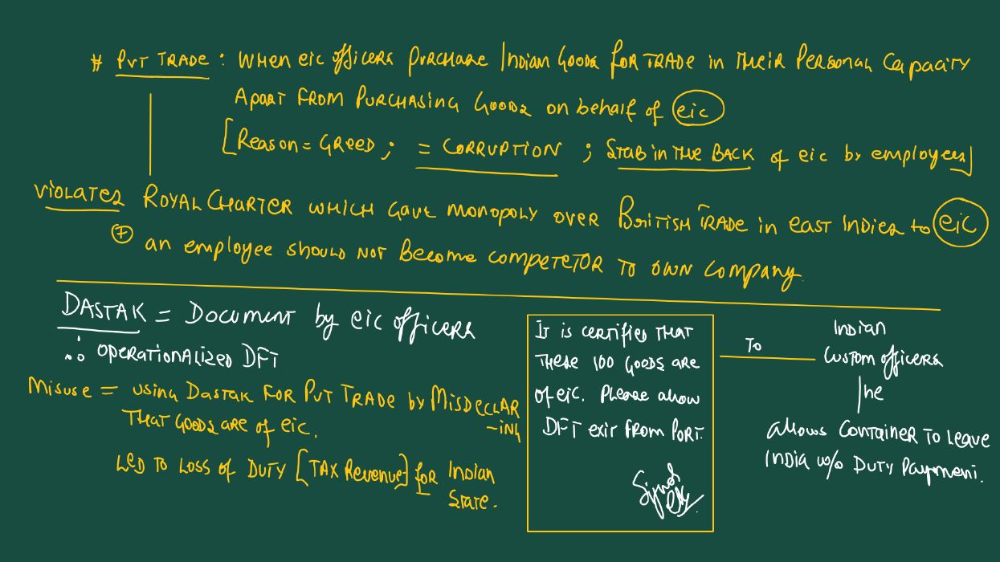
| Category | Who they were | Whose law was broken |
|---|---|---|
| Interlopers | Non-EIC British merchants who traded with India (the teacher: Britishers, either traders or other companies) | They violated the Royal Charter (British law), leading to court cases back in Britain |
| Free merchants | Non-EIC British merchants stationed in India who agreed to sell Indian goods to the EIC in India itself rather than exporting independently (the teacher: an "ex-interloper") | None: their trade became artificially legal in the eyes of British law |
| Dastak misuse by EIC officials | EIC officials passing private goods as Company goods | NOT British law but Indian law: specifically customs duty evasion (the slide adds: under Bengal's framework) |
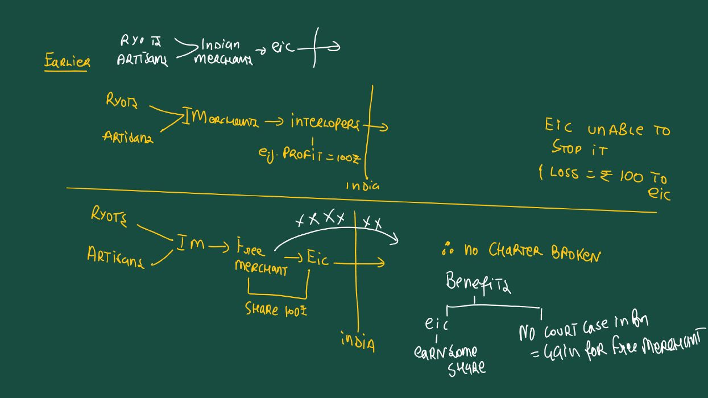
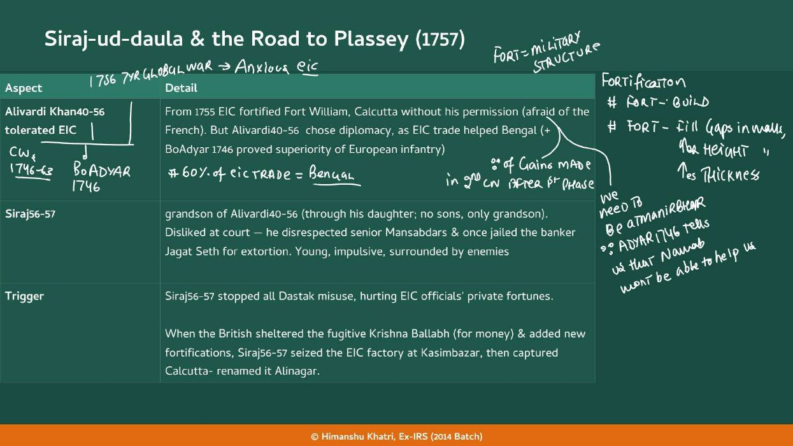
| Aspect | Detail |
|---|---|
| What happened | During the capture of Calcutta, British prisoners were locked overnight in a small, airless guardroom in Fort William |
| The colonial account | Written by J.Z. Holwell, a survivor and briefly Governor of Bengal. It claimed that 146 were locked in and 123 died of suffocation |
| Modern historians | The actual number of dead was approximately 30 to 40 |
| Why it mattered | It became a powerful propaganda tool to justify the EIC's military response against Siraj 56-57 and to demonise Indian rulers in the British public imagination |
| Year | What happened |
|---|---|
| 1760 | Holwell built a monument in memory of the Black Hole Tragedy |
| 1821 | It had fallen into ruin and was demolished |
| 1901 | Viceroy Curzon 99-05 (1899-1905) built a marble replica at the same spot |
| 1940 | Netaji Bose led a big agitation to remove it, calling it colonial propaganda to tarnish Siraj 56-57's image, and used the campaign to build Hindu-Muslim unity |
| Result | The monument was not demolished but shifted from the public square to the graveyard of St. John's Church, Calcutta, where it stands today |
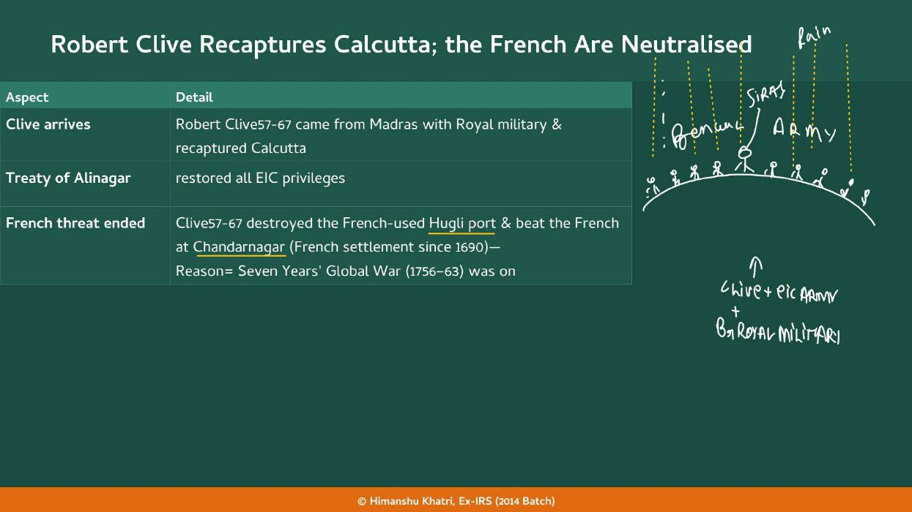
| To whom | Amount | When |
|---|---|---|
| The Royal British military | 2,75,000 pounds, for distribution to soldiers (not the EIC army, which was different) | Immediately after the Battle of Plassey 1757 |
| Clive 57-67 personally | 2,34,000 pounds, plus a personal jagir of 35,000 pounds per annum | Immediately after the Battle of Plassey 1757 |
| The EIC | Rs 2.25 crore | Immediately after the Battle of Plassey 1757 |
| The EIC, as "political gifts" from Bengal | A further 2.5 million pounds | Between 1757 and 1765 |
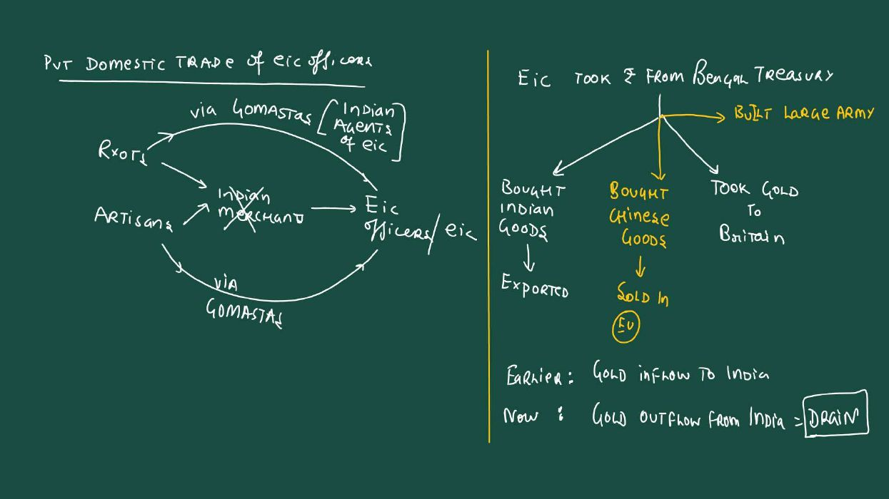
| Nawab | What to remember |
|---|---|
| Murshid Quli Khan (MQK 17-27) | The Nawab of the 1717 Farman: accepted it in part, resisted Dastak abuse and the Royal Mint |
| Shuja-ud-din 27-39 | Continuity Nawab: a low-drama interim |
| Sarfaraz Khan (1739-40) | Added by the teacher in ink beside Shuja-ud-din 27-39 (the gap between 1739 and 1740) |
| Alivardi Khan 40-56 | Pragmatic; tolerated the EIC's provocations and warned Siraj 56-57 on his deathbed |
| Siraj-ud-Daula 56-57 | Precious grandson; stopped Dastak abuse; Black Hole; defeated at Plassey on 23 June 1757, then beheaded |
| Mir Jafar 57-60 | The EIC's puppet after Plassey (ruled 1757-60, then 1763-65) |
| Mir Qasim 60-63 | Son-in-law of Mir Jafar 57-60; shifted the capital to Patna (Bihar); militarised; ended Dastak abuse; then rebelled |
| Najm-ud-Daula (1765) | The Nizamat reduced to a puppet role: the Dual Government (1765-72) begins |
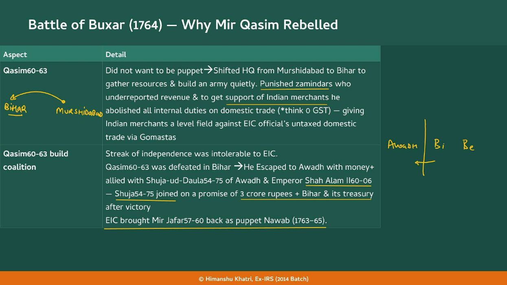
| Aspect | Detail |
|---|---|
| Danger at Delhi | Shah Alam II 60-06 had left Delhi, frustrated with court factionalism and fearing for his life after the murders and brutalities inflicted on his predecessors by Wazir Imad-ul-Mulk (also known as Gaddar-ul-Mulk) |
| Two Emperors destroyed by their own Wazir | Imad-ul-Mulk blinded Emperor Ahmad Shah Bahadur 48-54 in 1754 and murdered Emperor Alamgir II 54-59 in 1759 |
| His own kingdom | So Shah Alam II 60-06 left Delhi to establish his own kingdom in Bengal, which had stopped paying tribute since 1751 |
| 1761 | He attacked Bengal in 1761 but was defeated by the EIC. The EIC still respected him, since he was Emperor of Hindustan |
| In Awadh | Since then he was in Awadh and had chosen Shuja 54-75 as his Wazir |
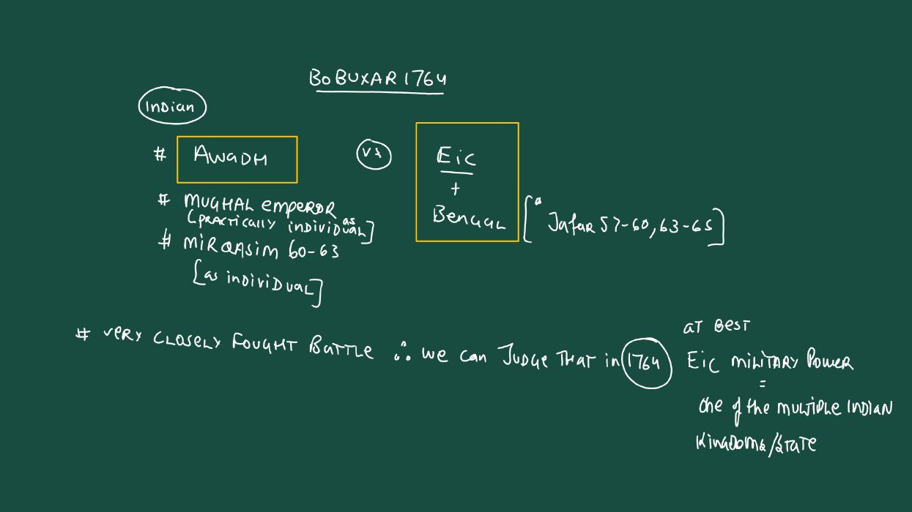
| Person | What happened after Buxar |
|---|---|
| Mir Qasim 60-63 | Escaped and died somewhere later |
| Shuja 54-75 | Was surprised to find himself not beheaded |
| Shah Alam II 60-06 | Was treated with respect, as in him resided the symbolic sovereignty of the Mughal State. With him as an ally, the foreigner EIC's legal right as a political power in India would be stronger |
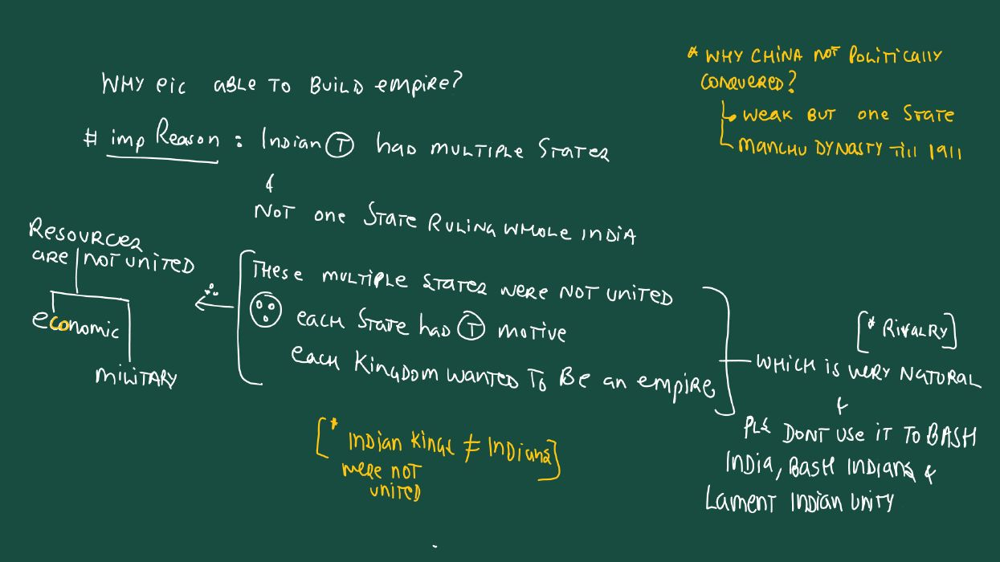
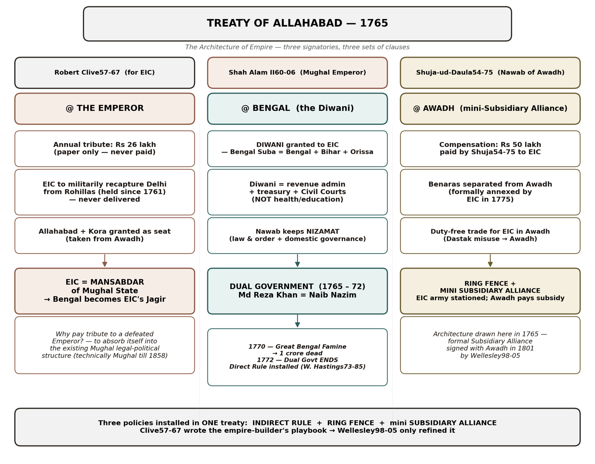
| Signatory | Side |
|---|---|
| Robert Clive 57-67 | Signed for the EIC |
| Shah Alam II 60-06 | Mughal Emperor: the Indian side |
| Shuja-ud-Daula 54-75 | Nawab of Awadh: the Indian side |
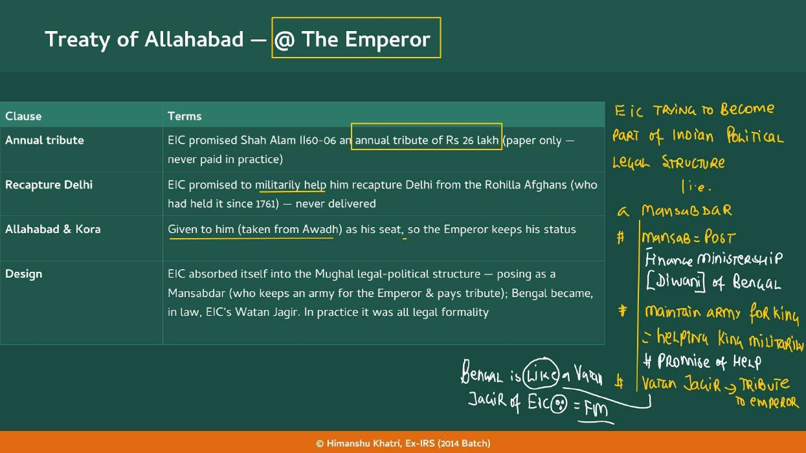
| Clause | Terms | In practice |
|---|---|---|
| Annual tribute | The EIC promised to pay Shah Alam II 60-06 an annual tribute of 26 lakh rupees | Not paid |
| Recapture Delhi | The EIC promised to militarily help him recapture Delhi from the Rohilla Afghans (who had held it since 1761) | No army was supplied |
| Allahabad and Kora | Given to him (taken from Awadh) so that the Emperor maintains his status | His seat |
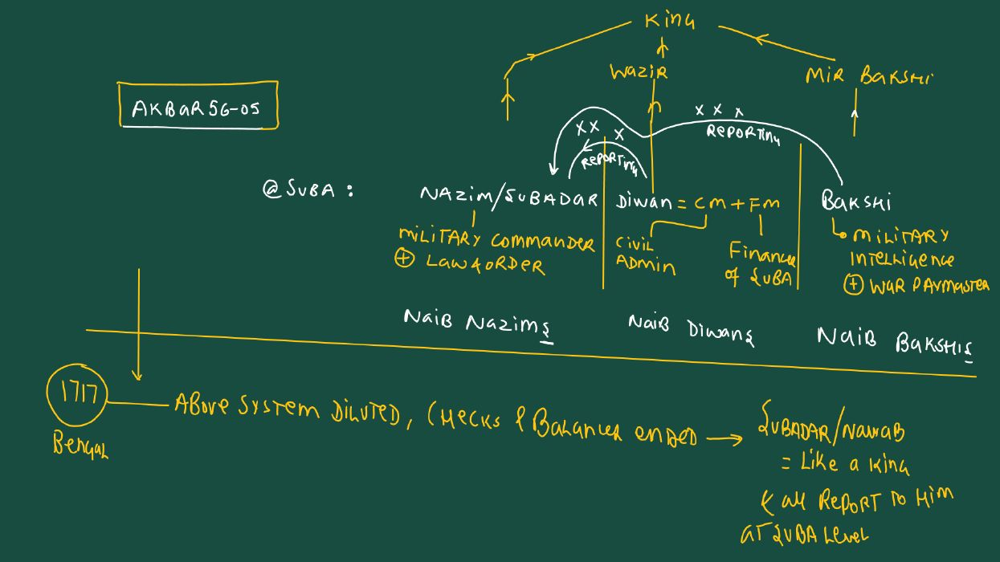
| Officer in the Suba | Functions | Reported to |
|---|---|---|
| Nazim / Subadar | Military commander + law and order | The centre (the King) |
| Diwan | "CM + FM": civil administration and the finance of the Suba | The centre (the Wazir's line), not the Nazim |
| Bakshi | Military intelligence + war paymaster | The centre (the Mir Bakshi's line), not the Nazim |
| Deputies | Naib Nazims, Naib Diwans, Naib Bakshis | Their own heads |
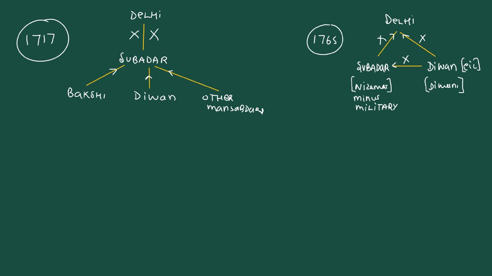
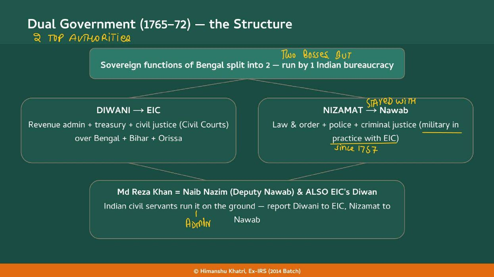
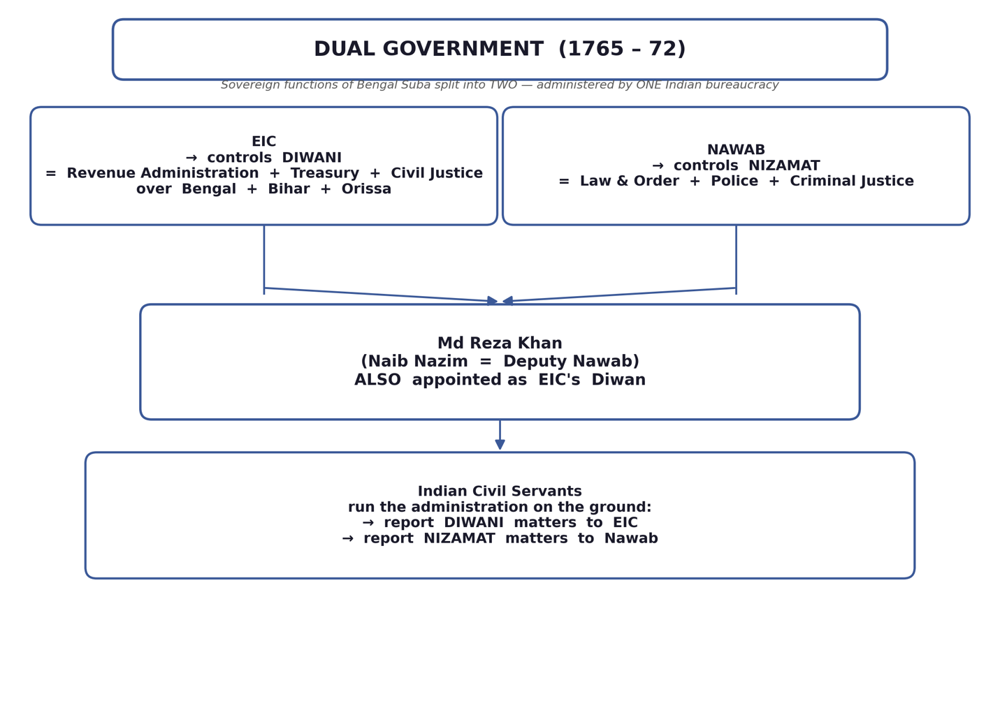
| Function | Legally with | What it covered |
|---|---|---|
| Diwani | The EIC | Revenue administration, the treasury, civil administration and civil justice (Civil Courts) over Bengal, Bihar and Orissa |
| Nizamat | The Nawab | Law and order, police, criminal justice (the military was in practice with the EIC, the teacher adds "since 1757") |
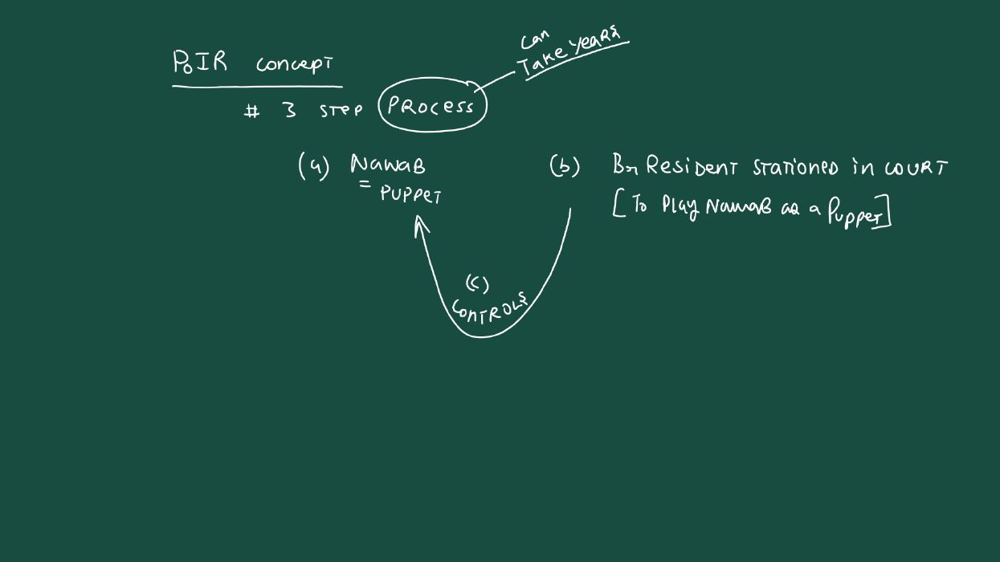
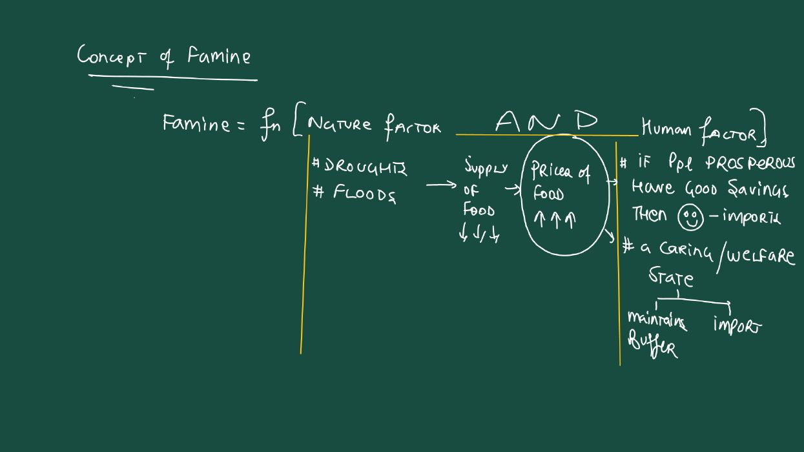
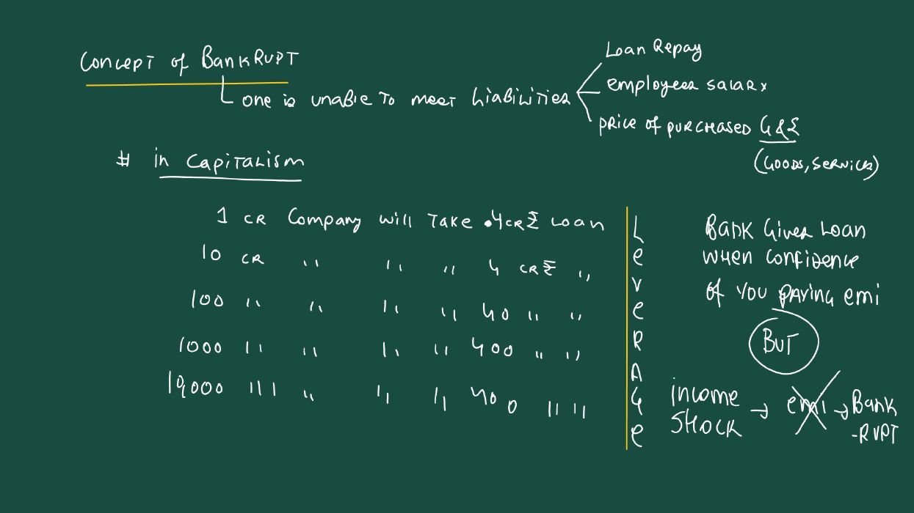
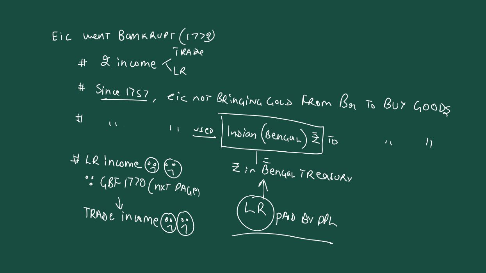
| Clause | Terms |
|---|---|
| Compensation | Shuja 54-75 was made to pay 50 lakh rupees to the EIC as compensation |
| Benaras | Benaras was separated from Awadh (the EIC formally annexed it in 1775) |
| Kora and Allahabad | Went to the Emperor |
| Duty-free trade | The EIC was granted duty-free trade in Awadh, and Dastak misuse began there too |
| Policy of Ring Fence | Initiated with Awadh (see below) |
| Mini Subsidiary Alliance | Awadh partially outsourced its military to the EIC (see below) |
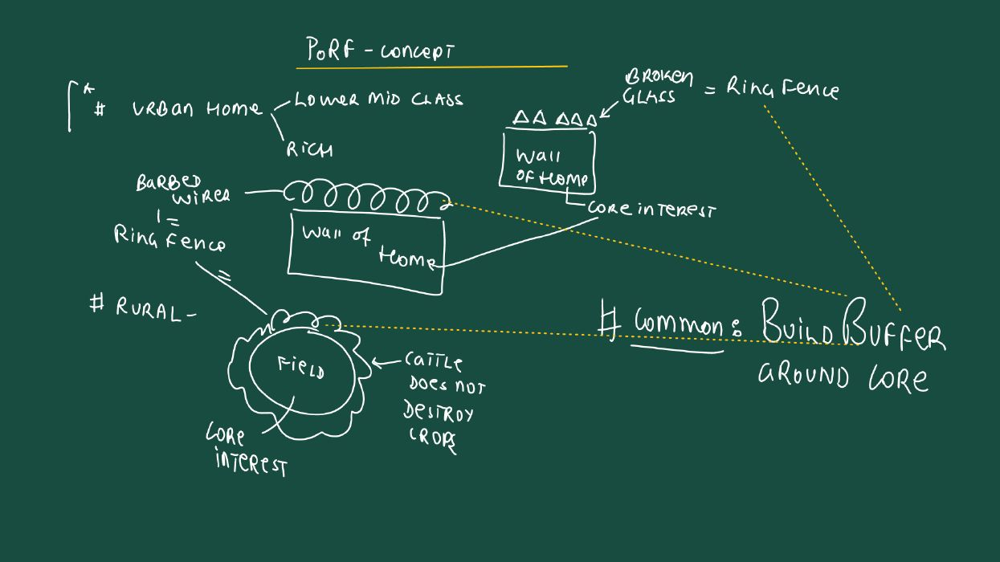
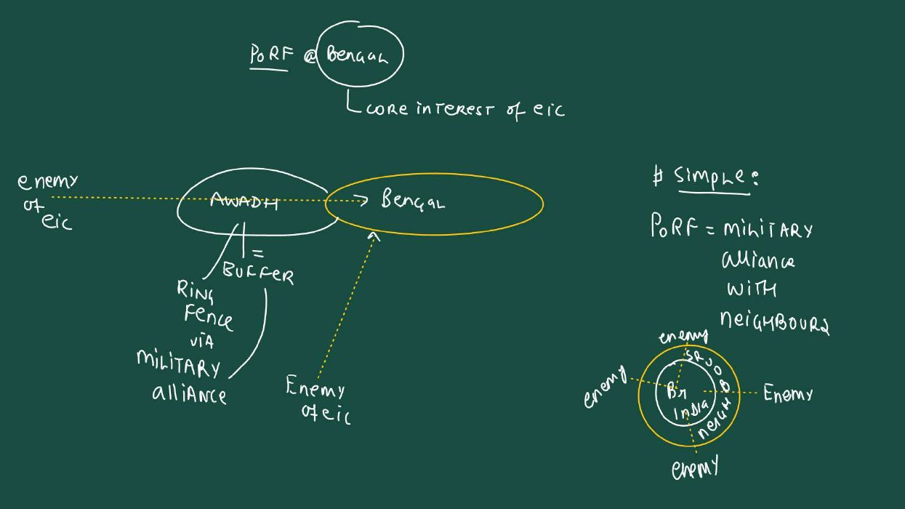
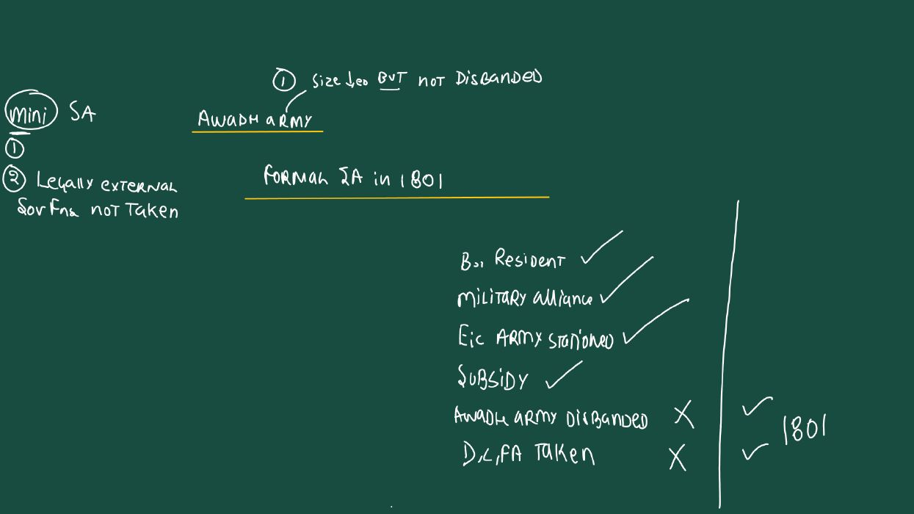
| Feature | Awadh in 1765 (mini SA) | Awadh in 1801 (formal SA) |
|---|---|---|
| British Resident | Yes (tick) | Yes |
| Military alliance | Yes (tick) | Yes |
| EIC army stationed | Yes (tick) | Yes |
| Subsidy paid by Awadh | Yes (tick) | Yes |
| Awadh's own army | Size reduced BUT not disbanded (cross) | Disbanded (tick, 1801) |
| External sovereign functions ("D, L, FA taken") | Legally not taken (cross) | Taken (tick, 1801): the handout says its foreign policy was also taken over |
| Instrument | What Clive 57-67 invented or operationalised in ToA 1765 |
|---|---|
| Policy of Indirect Rule (ticked) | Puppet Nawab + British Resident + control through the Resident: installed in Bengal's Nizamat |
| Policy of Ring Fence (ticked) | A buffer of allied neighbouring States around the EIC's core: seeded with Awadh |
| Mini Subsidiary Alliance (ticked) | Outsourcing a State's military to the EIC, stationed and subsidised: drawn with Awadh |
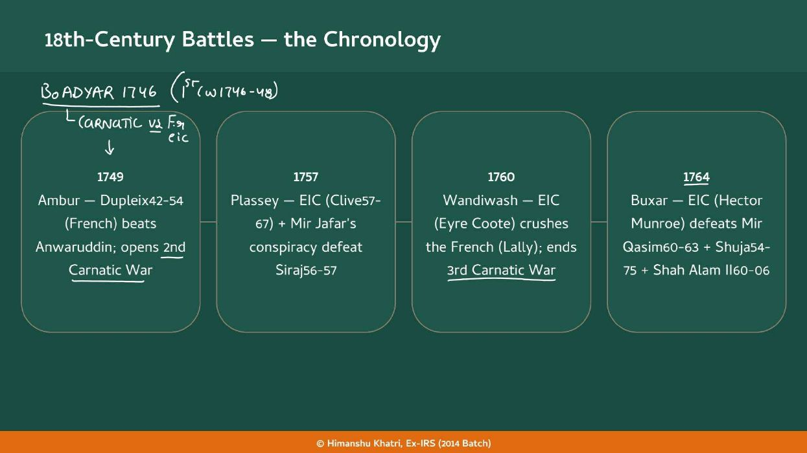
| No. | Year | Battle | Combatants and outcome |
|---|---|---|---|
| 1 | 1749 | Ambur | Dupleix 42-54 (French) defeats Anwaruddin; opens the 2nd Carnatic War |
| 2 | 1757 | Plassey | EIC (Clive 57-67) + Mir Jafar 57-60's conspiracy defeats Siraj 56-57 |
| 3 | 1760 | Wandiwash | EIC (Eyre Coote) crushes the French (Lally); ends the 3rd Carnatic War |
| 4 | 1764 | Buxar | EIC (Hector Munroe) defeats Mir Qasim 60-63 + Shuja-ud-Daula 54-75 + Shah Alam II 60-06 |
| Feature | Plassey (23 June 1757) | Buxar (1764) |
|---|---|---|
| Nature | No real battle: court conspiracy | The EIC's first real military victory; closely fought |
| EIC commander | Robert Clive 57-67 | Hector Munroe (Clive 57-67 was in London) |
| Indian side | Siraj 56-57; the bulk of his army did not fight (Mir Jafar 57-60) | Mir Qasim 60-63 + Shuja-ud-Daula 54-75 + Shah Alam II 60-06 |
| What the EIC got | Military domination and political supremacy; a puppet Subahdar; the Plassey Plunder | The Diwani of Bengal, Bihar and Orissa through ToA 1765: a legal sovereign function |
| The handout's phrase | The EIC's political breakthrough | The EIC's sovereign breakthrough |
| Wealth | Illegal plunder (1757-65) | The drain becomes a legal right (from 1765) |
| Year | What happened |
|---|---|
| 1600 | 31 December: the EIC's trade income begins (its only income until 1765) |
| 1612 | Battle of Suvali: the EIC defeats the Portuguese |
| 1613 | Farman of Jahangir 05-27: right to establish a factory at Surat ★ |
| 1615 | Thomas Roe is British Resident (to 1619) |
| 1618 | Farman of Jahangir 05-27: factories in the whole Mughal empire, liberal trading rights |
| 1690 | Chandarnagar a French settlement since this year (slide); the teacher's "[1690]" beside the Calcutta settlement |
| 1691 | Farman of the Subahdar of Bengal (Aurangzeb 58-07's approval): duty-free trade in Bengal for Rs 3,000 a year ★ |
| 1699 | The teacher's ink: "[Presidency 1699]" |
| 1717 | Royal Farman of Farrukhsiyar 13-19, the "Magna Carta of the Company"; MQK 17-27 Nawab of Bengal (to 1727) ★ |
| 1727 | Shuja-ud-din 27-39 (to 1739) |
| 1739 | Sarfaraz Khan (1739-40), added by the teacher |
| 1740 | Alivardi Khan 40-56 (to 1756) |
| 1746 | Battle of Adyar proves the strength of European infantry (1st Carnatic War 1746-48) |
| 1749 | Battle of Ambur: Dupleix 42-54 defeats Anwaruddin; opens the 2nd Carnatic War ★ |
| 1750 | Private trade of EIC officials worth 1,00,000 pounds a year, about 50 times their salaries |
| 1751 | Bengal stops paying tribute to Delhi; Dupleix 42-54's subsidy idea at Hyderabad |
| 1754 | Wazir Imad-ul-Mulk blinds Emperor Ahmad Shah Bahadur 48-54 |
| 1755 | The EIC starts fortifying Fort William without Alivardi Khan 40-56's permission |
| 1756 | Seven Years' Global War begins (to 1763); Siraj 56-57 becomes Nawab, captures Calcutta; Black Hole Tragedy ★ |
| 1757 | Treaty of Alinagar; 23 June: Plassey; Mir Jafar 57-60 a puppet Subahdar; conquest and the Drain begin ★ |
| 1759 | Imad-ul-Mulk murders Emperor Alamgir II 54-59 |
| 1760 | Mir Qasim 60-63 replaces Mir Jafar 57-60; Wandiwash ends the 3rd Carnatic War; Holwell builds his monument ★ |
| 1761 | Shah Alam II 60-06 attacks Bengal and is defeated by the EIC; Rohilla Afghans hold Delhi from this year |
| 1763 | Mir Qasim 60-63 defeated in Bihar; Mir Jafar 57-60 brought back (to 1765) |
| 1764 | Battle of Buxar: Hector Munroe defeats Mir Qasim 60-63, Shuja 54-75 and Shah Alam II 60-06 ★ |
| 1765 | Treaty of Allahabad: Diwani to the EIC, Dual Government begins, Ring Fence and mini Subsidiary Alliance with Awadh; Company State begins ★ |
| 1770 | Great Bengal Famine: about 1 crore dead, one-third of Bengal ★ |
| 1772 | Dual Government ends; Direct Rule; the teacher: the EIC went bankrupt ★ |
| 1775 | The EIC formally annexes Benaras |
| 1798 | Hyderabad signs the first Subsidiary Alliance |
| 1801 | Formal Subsidiary Alliance with Awadh: its army disbanded, foreign policy taken over |
| 1821 | The ruined Holwell monument is demolished |
| 1901 | Curzon 99-05 builds a marble replica of the Holwell monument |
| 1940 | Netaji Bose's agitation; the monument is shifted to St. John's Church graveyard |
Adyar 1746, Ambur 1749 and Wandiwash 1760 complete the battle chronology; Dupleix 42-54's 1751 idea at Hyderabad is what Clive 57-67 copies with Awadh; the Seven Years' War explains Chandarnagar.
The Royal Charter and the EIC's monopoly, Suvali 1612, Surat, Thomas Roe, Calcutta and the Presidencies; the teacher's L, E, J shorthand for rule.
Bengal under MQK 17-27 as a successor State; Awadh under Sadat Khan 22-39; how Rebel States were absorbed as Mansabdars with Watan Jagirs.
Wellesley 98-05 formalises what Clive 57-67 drew in 1765; Hyderabad 1798 is the first signatory, Awadh's formal alliance is 1801.
The Nawab of Bengal after 1772 is as powerless as the Chhatrapati after the Treaty of Sangola 1750; Third Panipat 1761 (the Prelims 2004 distractor).
Wazir Imad-ul-Mulk, the blinding of Ahmad Shah Bahadur 48-54 and the murder of Alamgir II 54-59, and why Shah Alam II 60-06 left Delhi.
Tipu 82-99 Sultan's death in the Fourth Anglo-Mysore War (the other Prelims 2004 distractor); Vatan Jagirs and Subordinate Alliances.
Read the question, answer in your head, then tap to check.
| What began at Plassey and what did not? | Conquest (military domination and political supremacy) and the Drain of Wealth began; rule did not: the EIC took no sovereign function legally. |
| What did the four Farmans give? | 1613 (Jahangir 05-27): factory at Surat. 1618 (Jahangir 05-27): factories in the whole empire and liberal rights, Thomas Roe. 1691 (Subahdar of Bengal): duty-free trade in Bengal for Rs 3,000 a year. 1717 (Farrukhsiyar 13-19): duty-free trade, Royal Mint, 38 villages. |
| How was the 1717 Farman obtained? | Medical diplomacy: Dr William Hamilton, an EIC surgeon, cured Farrukhsiyar 13-19 of a serious illness. |
| Three rights in the 1717 Farman? | Duty-free trade in Deccan, Gujarat and Bengal; use of the Royal Mint; rent of 38 villages around Calcutta. |
| Why did MQK 17-27 refuse the Royal Mint? | It hurt sovereign authority and government revenue: the government earned commission on converting gold into sikkas. |
| What is a Dastak? | A permit issued by EIC officials certifying that goods belonged to the EIC, hence exempt from export duty. |
| How big was private trade by 1750? | 1,00,000 pounds a year, roughly 50 times the officials' salaries; so the primary motive was private trade, not salary. |
| Who curbed private trade later? | Cornwallis 86-93, an honest Governor General (the teacher: by increasing salaries). |
| Interloper versus free merchant? | Interloper: non-EIC British merchant trading with India, breaking the Royal Charter. Free merchant: one who sells to the EIC inside India, so no Charter is broken. |
| Why did Alivardi Khan 40-56 tolerate the fortification of Fort William? | He was pragmatic: the EIC's trade benefited Bengal, and Adyar 1746 had shown the strength of European infantry. |
| Why was Siraj 56-57 disliked at court? | He disrespected senior Mansabdars and had imprisoned the banker Jagat Seth for extortion; young, impulsive, surrounded by enemies. |
| What were the triggers for Siraj 56-57's attack on Calcutta? | He had stopped Dastak misuse; the British gave asylum to Krishna Ballabh (for money) and added new fortifications. He seized Kasimbazar, then Calcutta. |
| What did the Treaty of Alinagar do? | Restored all EIC privileges after Clive 57-67 recaptured Calcutta (Alinagar was Siraj 56-57's name for Calcutta). |
| Why was Plassey "no real battle"? | Mir Jafar 57-60 ensured the bulk of the Bengal army did not fight; the victory came from court conspiracy. |
| How did Plassey start the Drain of Wealth? | Bengal's own revenue paid for Indian and Chinese goods and gold was shipped to Britain: gold inflow turned into gold outflow. |
| What did Mir Qasim 60-63 do to become independent? | Shifted from Murshidabad to Bihar, punished zamindars who underreported revenue, abolished all internal duties on domestic trade. |
| Why was Shah Alam II 60-06 in Awadh? | He left Delhi fearing Wazir Imad-ul-Mulk (who blinded Ahmad Shah Bahadur 48-54 in 1754 and murdered Alamgir II 54-59 in 1759), failed against the EIC in Bengal in 1761, and made Shuja 54-75 his Wazir. |
| How was Buxar lost? | Shuja 54-75 lost patience and attacked the fort directly against Mir Qasim 60-63's advice; Hector Munroe's final charge turned a close battle. |
| The teacher's "imp reason" why the EIC could build an empire? | India had multiple States, not one State; they were rivals, so economic and military resources were not united. Indian kings, not Indians, were not united. |
| What did the Emperor get in ToA 1765? | A promise of Rs 26 lakh annual tribute, a promise of military help to retake Delhi from the Rohillas, and Allahabad and Kora. The first two were never delivered. |
| What was the EIC's legal position after ToA 1765? | A Mansabdar of the Mughal State, with Bengal as its Watan Jagir: absorbed into the Mughal legal-political structure. |
| Diwani versus Nizamat? | Diwani (EIC): revenue administration, treasury, civil administration and civil justice. Nizamat (Nawab): law and order and criminal justice; military in practice with the EIC. |
| Why did the EIC not annex Bengal in 1765? | A company works for profit, not for ruling; annexation meant administrative cost and responsibility; it was already safe militarily and now had a legal right over the finances. |
| Three elements of Indirect Rule? | The Nawab is a puppet; a British Resident is stationed in court; the Resident controls the puppet and governs indirectly. |
| Why did the Dual Government end in 1772? | The Great Bengal Famine of 1770 (1 crore dead, one-third of the population) collapsed land revenue and law and order; the EIC took the Nizamat and set up Direct Rule. |
| The teacher's concept of famine? | Famine = a function of a nature factor (drought, floods) AND a human factor (people's savings; a caring State that keeps a buffer and imports). |
| What did Awadh lose in ToA 1765? | Rs 50 lakh compensation; Benaras (annexed by the EIC in 1775); Kora and Allahabad to the Emperor; duty-free trade for the EIC; part of its military autonomy. |
| What is the Policy of Ring Fence? | A military buffer around the EIC's core territory through military alliances with neighbouring States: Awadh protects Bengal. Analogy: barbed wire or broken glass on a wall; NATO in the Cold War. |
| Mini Subsidiary Alliance (1765) versus the formal one (1801)? | 1765: Awadh's army reduced, an EIC army stationed and paid by subsidy, foreign policy not taken. 1801: Awadh's army disbanded and foreign policy taken over. |
| Why is Clive 57-67 called the father of the empire-building toolkit? | Indirect Rule, Ring Fence and the mini Subsidiary Alliance were all invented or operationalised by him in ToA 1765; Wellesley 98-05 built on it. |
Tap the card to flip.